Sara Weinand
sara weinand
web designer | seattle, wa
Stremler Gravel: In Progress
Web Design | Front End Development
About the Project:
Stremler Gravel is a family run company in Lynden, Washington. They approached me about creating a website for them as they didn't have one at the time. The Stremlers wanted to be set apart from their competition and allow customers to interact with their site and gain information about the company. This will eventually be transformed into a Wordpress to allow the company to update their content as they please.
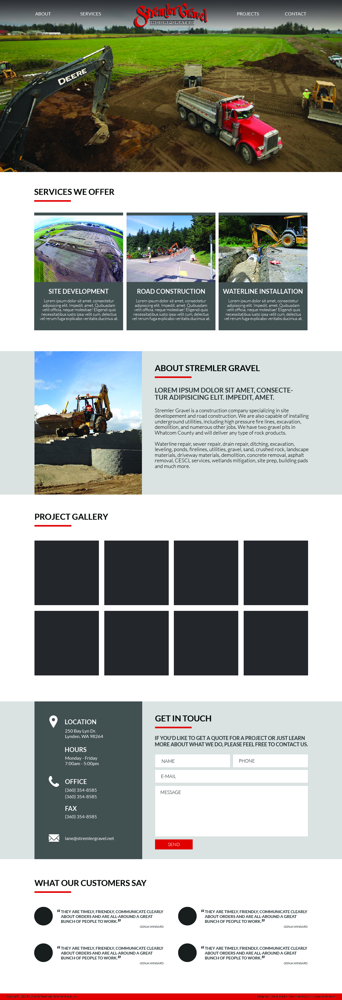Design Elements:
Font-Family: Proxima Nova
a b c d e f g h i j k l m n o p q r s t u v w x y z
Information Architecture
I organized the website's content by determining what was going to be in each 'section' of the website based on the requests of the client. In this step, I also make notes about the content that will go within each area.
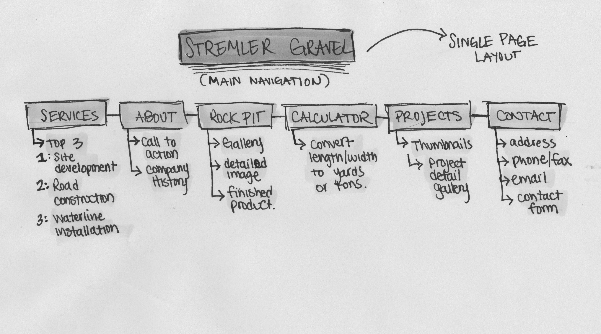Layout & Sketches
Based on the information architecture, I begin wireframing the pages and layout out where the content belongs on the page. The wireframes were updated as we made changes to the page content. I like to put all of my ideas and changes on paper as I work so I'm able to revisit them later.
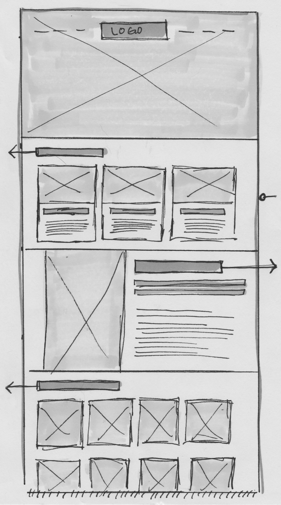 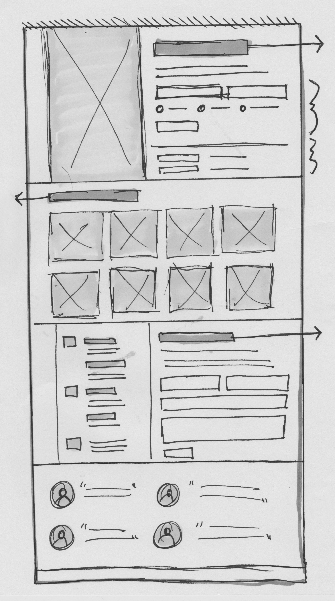Fine Art by Barb | April 2015
Web Design | Front End Development
About the Project:
Barbara Chase is a photographer in Spokane, Washington specializing in senior portraits. Barb needed an overhaul on her current website, and she wanted something that would display her work nicely and increase her client base.

Design Elements:
Information Architecture
I organize the information by laying out a site map that includes all of the relevant information that will be present on each page. I typically revisit this step a few times to rearrange content and figure out how it will all work together in harmony.
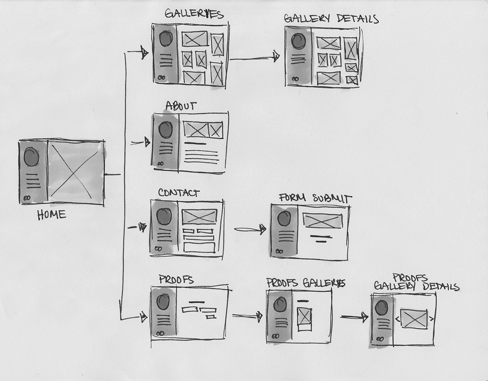Layout & Sketches
Based on the information architecture, I begin wireframing the pages and layout out where the content belongs on the page. The wireframes were updated as we made changes to the page content.
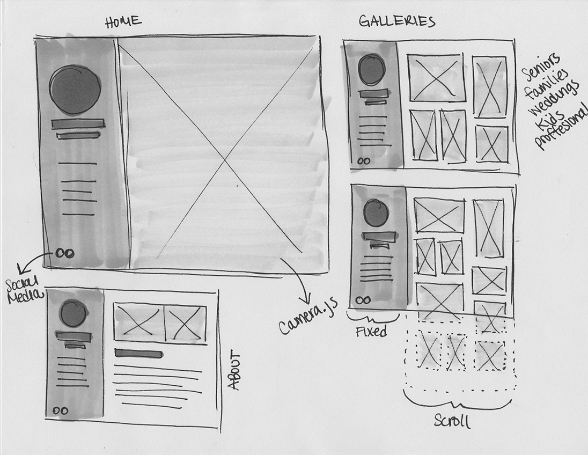 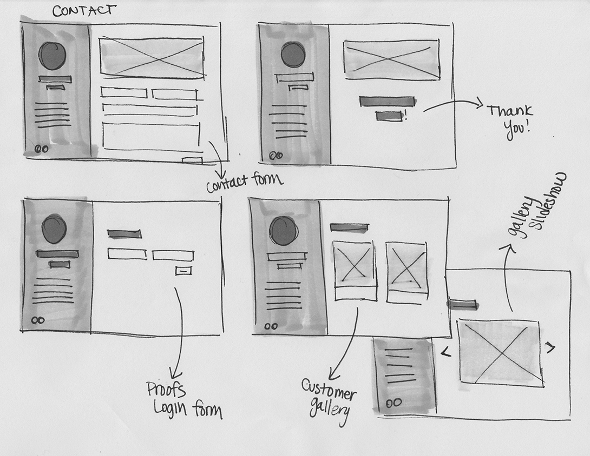Tenji Modern Sushi | Personal Project
Web Design | Front End Development
About the Project:
Tenji Modern Sushi was a personal project I completed in 2015. Tenji is a fictitious company, but I created the website to continue practicing and perfecting my front end development skills. I occasional revisit this site to make it better and better.
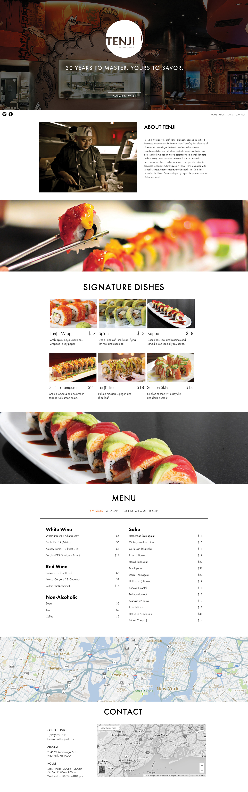Design Elements:
Font-Family: Futura
a b c d e f g h i j k l m n o p q r s t u v w x y z
Information Architecture
I organzed this site to be used mostly on a mobile device. A single page layout seemed like an obvious choice so the page only had to load once and users could gain all the information they needed in one place.
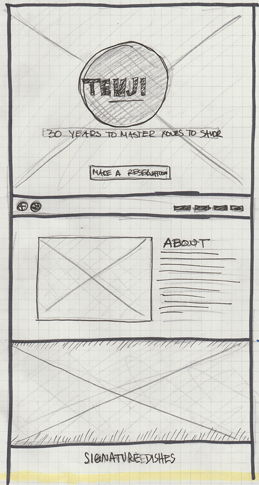 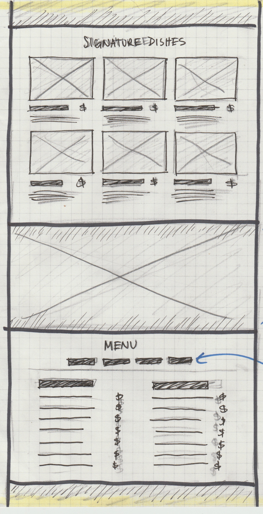 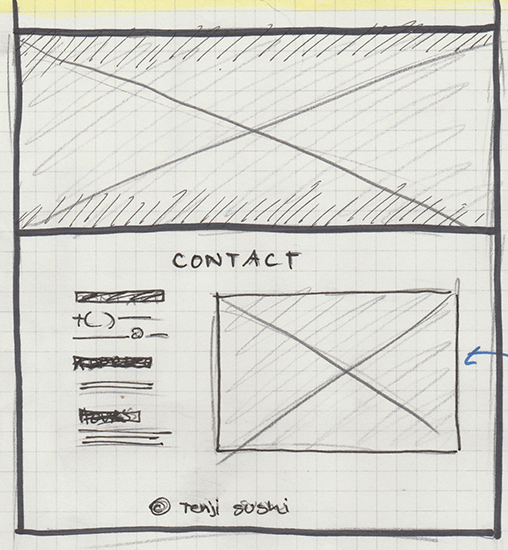Oakwood Men's Apparel | Personal Project
Web Design | Front End Development
About the Project:
Oakwood Men's Apparel is a person project I've been working on this last month. I wanted to visit the user experience of an e-commerce website and layout the content of an upscale mens's apparel company.
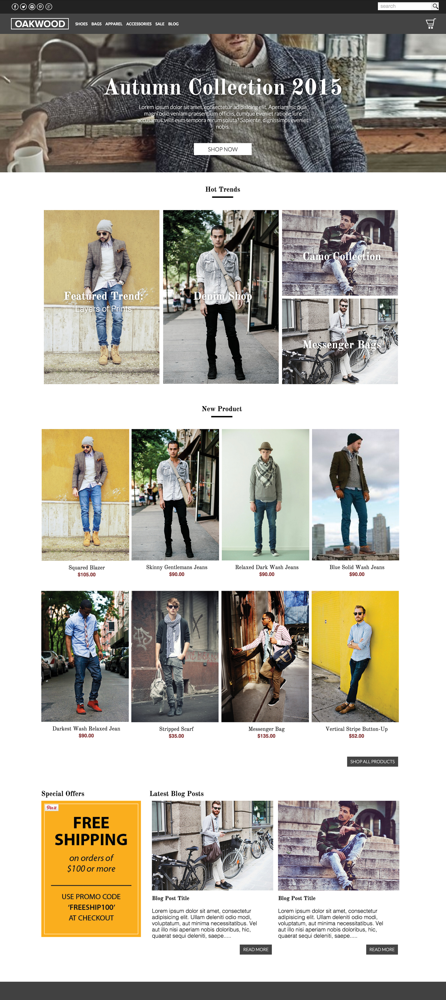Design Elements:
Font-Family: Playfair Display
a b c d e f g h i j k l m n o p q r s t u v w x y z
Information Architecture
I organize the information by laying out a site map that includes all of the relevant information that will be present on each page. I typically revisit this step a few times to rearrange content and figure out how it will all work together in harmony.
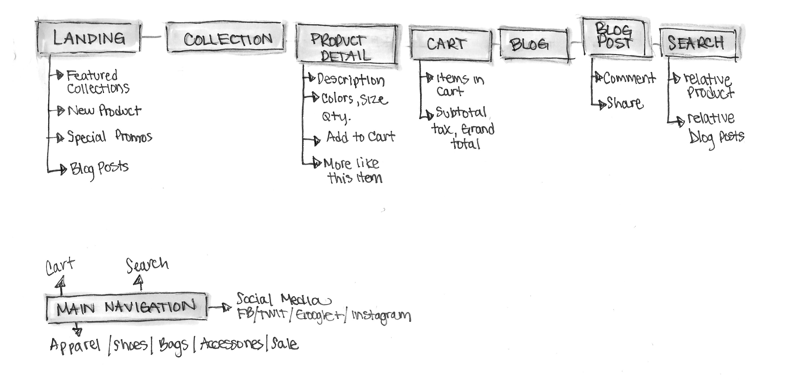 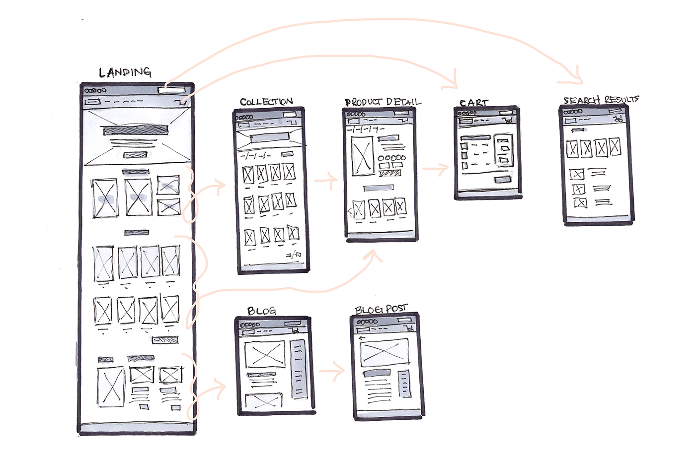Layout & Sketches
Based on the information architecture, I begin wireframing the pages and layout out where the content belongs on the page. The wireframes were updated as we made changes to the page content.
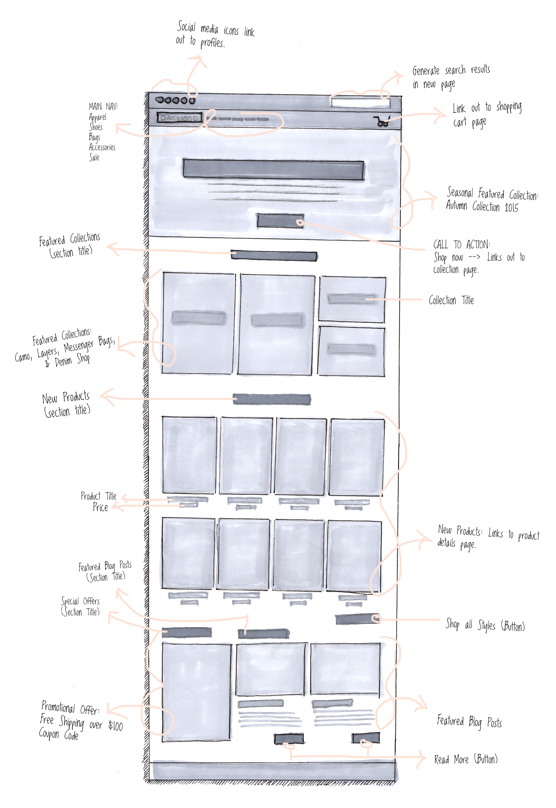
Slice: Responsive HTML Framework
Web Design | Front End Development
About the Project:
Slice is a fluid responsive HTML framework I built for myself, but I decided to make it open-source and allow everybody to use it. I was in need of a framework I could use easily and manipulate per project. Rather than using an existing framework, I created one that I could claim as my own.
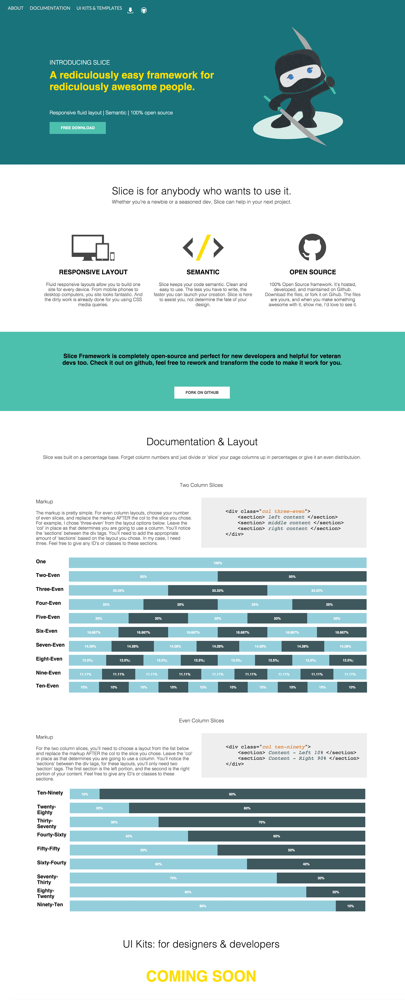Design Elements:
Font-Family: Proxmima Nova
a b c d e f g h i j k l m n o p q r s t u v w x y z
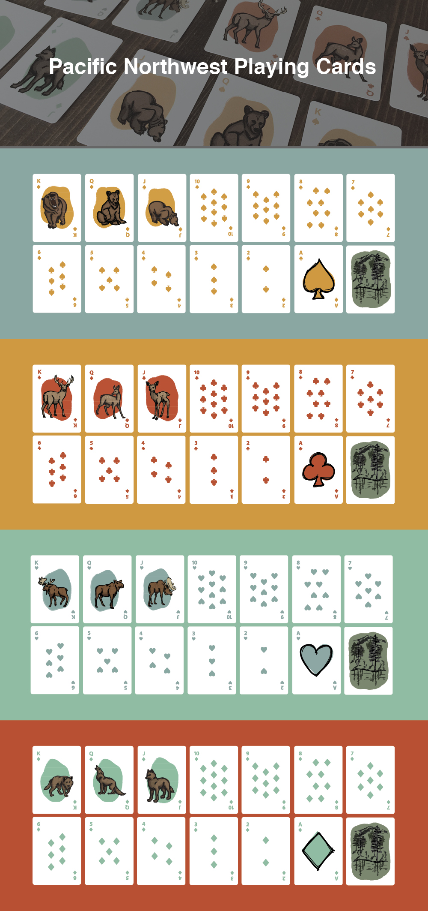
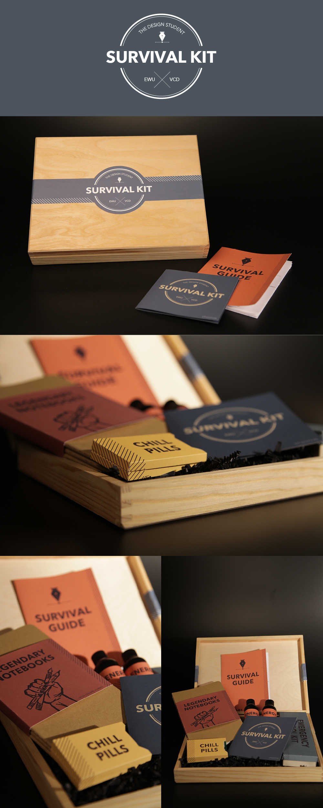
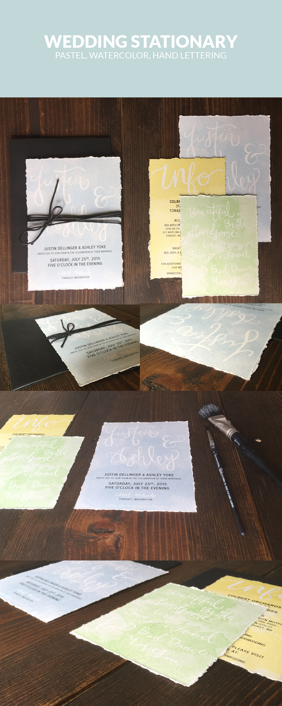